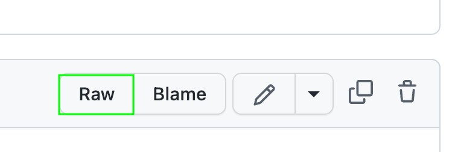

4.10. Create a DataFrame#
This section shows some tips to read or create a DataFrame.
4.11. Leverage PyArrow for Efficient Parquet Data Filtering#
When dealing with Parquet files in pandas, it is common to first load the data into a pandas DataFrame and then apply filters.
To improve query execution speed, push down the filers to the PyArrow engine to leverage PyArrow’s processing optimizations.
In the following code, filtering a dataset of 100 million rows using PyArrow is approximately 113 times faster than performing the same operation with pandas.
import pandas as pd
import numpy as np
file_path = "data.parquet"
# Define the number of rows
num_rows = 100_000_000
# Generate the DataFrame
data = {"id": range(1, num_rows + 1), "price": np.random.rand(num_rows) * 100}
df = pd.DataFrame(data)
# Write the result to a Parquet file
df.to_parquet(file_path, index=False, row_group_size=2_000_000)
# %%timeit
pd.read_parquet(file_path).query("id == 50000")
2.2 s ± 106 ms per loop (mean ± std. dev. of 7 runs, 1 loop each)
# %%timeit
pd.read_parquet(file_path, filters=[("id", "=", 50000)])
19.5 ms ± 414 µs per loop (mean ± std. dev. of 7 runs, 100 loops each)
4.11.1. Fix Unnamed:0 When Reading a CSV in pandas#
Sometimes, when reading a CSV in pandas, you will get an Unnamed:0 column.
# Create data
import pandas as pd
df = pd.DataFrame({"a": [1, 2, 3], "b": [4, 5, 6]})
df.to_csv("data.csv")
import pandas as pd
df = pd.read_csv("data.csv")
print(df)
Unnamed: 0 a b
0 0 1 4
1 1 2 5
2 2 3 6
To fix this, add index_col=0 to pandas.read_csv.
df = pd.read_csv("data.csv", index_col=0)
print(df)
a b
0 1 4
1 2 5
2 3 6
4.11.2. Read Data from a Website#
pandas allows you to read data from a website without downloading the data.
For example, to read a CSV from GitHub, click Raw then copy the link.

import pandas as pd
df = pd.read_csv(
"https://raw.githubusercontent.com/mwaskom/seaborn-data/master/exercise.csv",
index_col=0,
)
df.head(5)
| id | diet | pulse | time | kind | |
|---|---|---|---|---|---|
| 0 | 1 | low fat | 85 | 1 min | rest |
| 1 | 1 | low fat | 85 | 15 min | rest |
| 2 | 1 | low fat | 88 | 30 min | rest |
| 3 | 2 | low fat | 90 | 1 min | rest |
| 4 | 2 | low fat | 92 | 15 min | rest |
4.11.3. Divide a Large pandas DataFrame into Chunks#
Large dataframes can consume a significant amount of memory. By processing data in smaller chunks, you can avoid running out of memory and access data faster.
In the code below, using chunksize=100000 is approximately 5495 times faster than not using chunksize.
import pandas as pd
import warnings
warnings.filterwarnings("ignore")
# %%timeit
pd.read_csv("../data/flight_data_2018_to_2022.csv")
2.33 s ± 58.3 ms per loop (mean ± std. dev. of 7 runs, 1 loop each)
df = pd.read_csv("../data/flight_data_2018_to_2022.csv")
df.shape
(563737, 120)
# %%timeit
pd.read_csv("../data/flight_data_2018_to_2022.csv", chunksize=100000)
424 µs ± 30.9 µs per loop (mean ± std. dev. of 7 runs, 1000 loops each)
We can see that using chunksize=100000 divides the DataFrame into 6 portions, 5 of which have 100000 rows.
df_chunks = pd.read_csv("../data/flight_data_2018_to_2022.csv", chunksize=100000)
for df_ in df_chunks:
print(df_.shape)
(100000, 120)
(100000, 120)
(100000, 120)
(100000, 120)
(100000, 120)
(63737, 120)
4.11.4. Read HTML Tables Using Pandas#
If you want to quickly extract a table on a website and turn it into a Pandas DataFrame, use pd.read_html. In the code below, I extracted the table from a Wikipedia page in one line of code.
import pandas as pd
df = pd.read_html("https://en.wikipedia.org/wiki/Poverty")
df[1]
| Region | $1 per day | $1.25 per day[94] | $1.90 per day[95] | |||||||||
|---|---|---|---|---|---|---|---|---|---|---|---|---|
| Region | 1990 | 2002 | 2004 | 1981 | 2008 | 1981 | 1990 | 2000 | 2010 | 2015 | 2018 | |
| 0 | East Asia and Pacific | 15.4% | 12.3% | 9.1% | 77.2% | 14.3% | 80.2% | 60.9% | 34.8% | 10.8% | 2.1% | 1.2% |
| 1 | Europe and Central Asia | 3.6% | 1.3% | 1.0% | 1.9% | 0.5% | — | — | 7.3% | 2.4% | 1.5% | 1.1% |
| 2 | Latin America and the Caribbean | 9.6% | 9.1% | 8.6% | 11.9% | 6.5% | 13.7% | 15.5% | 12.7% | 6% | 3.7% | 3.7% |
| 3 | Middle East and North Africa | 2.1% | 1.7% | 1.5% | 9.6% | 2.7% | — | 6.5% | 3.5% | 2% | 4.3% | 7% |
| 4 | South Asia | 35.0% | 33.4% | 30.8% | 61.1% | 36% | 58% | 49.1% | — | 26% | — | — |
| 5 | Sub-Saharan Africa | 46.1% | 42.6% | 41.1% | 51.5% | 47.5% | — | 54.9% | 58.4% | 46.6% | 42.3% | 40.4% |
| 6 | World | — | — | — | 52.2% | 22.4% | 42.7% | 36.2% | 27.8% | 16% | 10.1% | — |
4.11.5. DataFrame.copy(): Make a Copy of a DataFrame#
Have you ever tried to make a copy of a DataFrame using =? You will not get a copy but a reference to the original DataFrame. Thus, changing the new DataFrame will also change the original DataFrame.
import pandas as pd
df = pd.DataFrame({"col1": [1, 2, 3], "col2": [4, 5, 6]})
df
| col1 | col2 | |
|---|---|---|
| 0 | 1 | 4 |
| 1 | 2 | 5 |
| 2 | 3 | 6 |
df2 = df
df2["col1"] = [7, 8, 9]
df
| col1 | col2 | |
|---|---|---|
| 0 | 7 | 4 |
| 1 | 8 | 5 |
| 2 | 9 | 6 |
A better way to make a copy is to use df.copy(). Now, changing the copy will not affect the original DataFrame.
df = pd.DataFrame({"col1": [1, 2, 3], "col2": [4, 5, 6]})
# Create a copy of the original DataFrame
df3 = df.copy()
## Change the value of the copy
df3["col1"] = [7, 8, 9]
## Check if the original DataFrame has been changed
df
| col1 | col2 | |
|---|---|---|
| 0 | 1 | 4 |
| 1 | 2 | 5 |
| 2 | 3 | 6 |
4.11.6. Copy on Write Mode in pandas 2.0#
Show code cell content
!pip install pandas==2.0.0
pandas DataFrame returns a view by default when selecting a subset, meaning changes to the view will change the original.
import pandas as pd
df1 = pd.DataFrame({"col1": [1, 2], "col2": [3, 4]})
# Create a view of the original DataFrame
df2 = df1["col1"]
## Change the value of the view
df2.iloc[0] = 10
## The original DataFrame has been changed
df1
| col1 | col2 | |
|---|---|---|
| 0 | 10 | 3 |
| 1 | 2 | 4 |
pandas 2.0 offers the option to return a copy instead of a view by default, preventing changes to the copy from affecting the original.
pd.options.mode.copy_on_write = True
df1 = pd.DataFrame({"col1": [1, 2], "col2": [3, 4]})
# Create a copy of the original DataFrame
df2 = df1["col1"]
## Change the value of the copy
df2.iloc[0] = 10
## The original DataFrame has not been changed
df1
| col1 | col2 | |
|---|---|---|
| 0 | 1 | 3 |
| 1 | 2 | 4 |
4.11.7. Specify Datetime Columns with parse_dates#
Use the parse_dates parameter to specify datetime columns when creating a pandas DataFrame from a CSV, rather than converting columns to datetime post-creation. This keeps the code concise and easier to read.
# Instead of this
import pandas as pd
df = pd.read_csv('data.csv')
print(f'Datatypes before converting to datetime\n{df.dtypes}\n')
df['start_date'] = pd.to_datetime(df['start_date'])
df['end_date'] = pd.to_datetime(df['end_date'])
print(f'Datatypes after converting to datetime\n{df.dtypes}')
Datatypes before converting to datetime
start_date object
end_date object
value int64
dtype: object
Datatypes after converting to datetime
start_date datetime64[ns]
end_date datetime64[ns]
value int64
dtype: object
## Do this
df = pd.read_csv('data.csv', parse_dates=['start_date', 'end_date'])
df.dtypes
start_date datetime64[ns]
end_date datetime64[ns]
value int64
dtype: object